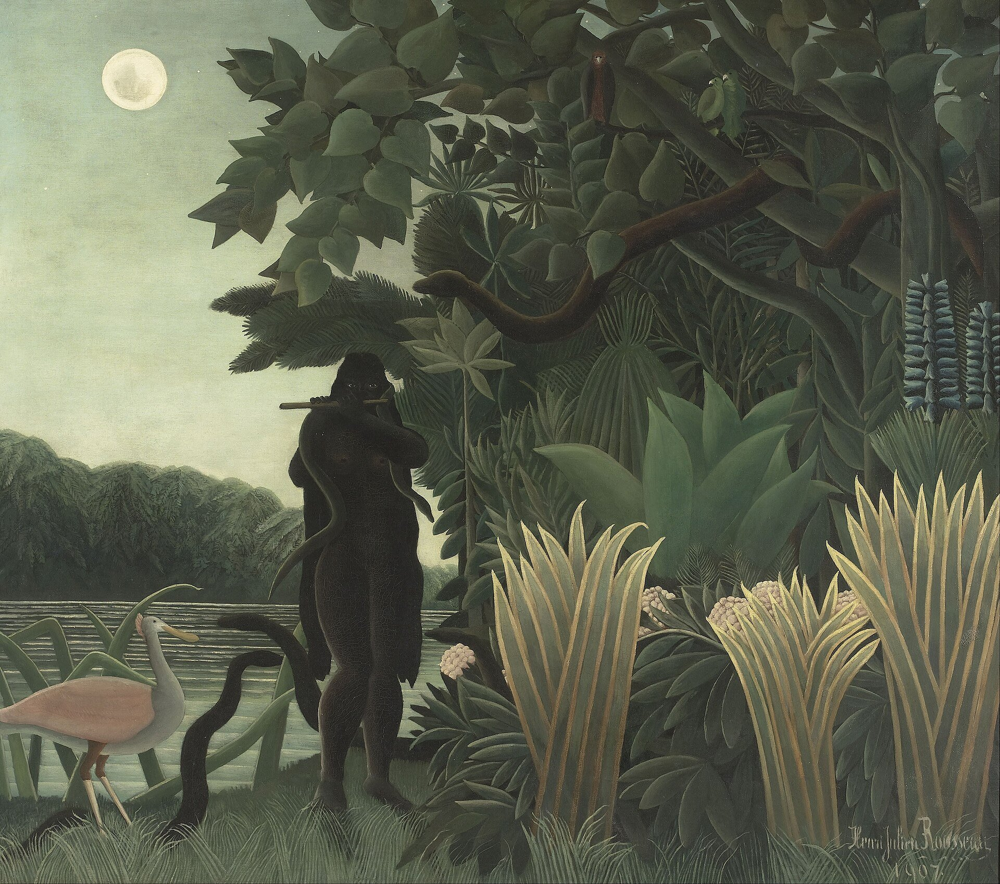
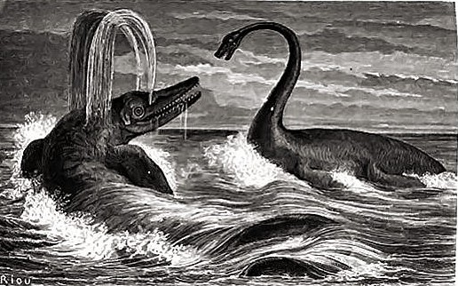
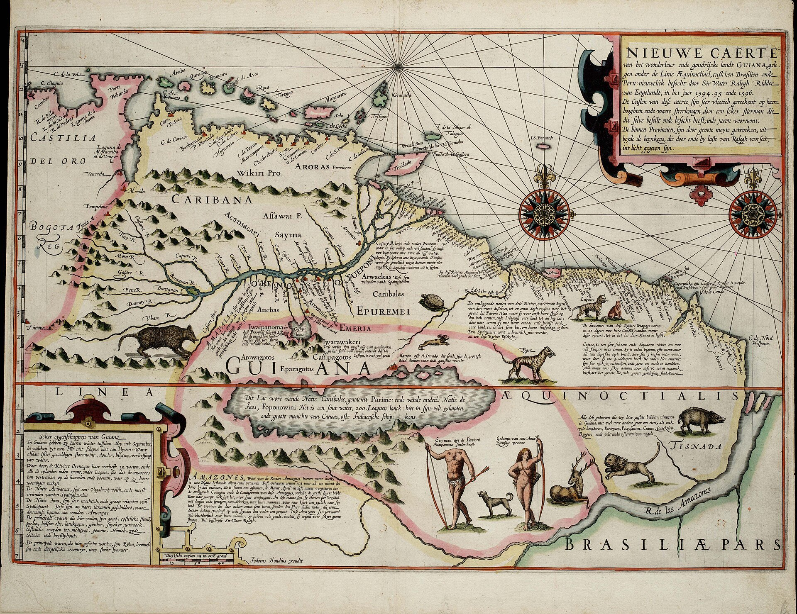

← 目次“I was not surprised to see somebody sitting aft, on the deck, with his legs dangling over the mud. You see I rather chummed with the few mechanics there were in that station, whom the other pilgrims naturally despised—on account of their imperfect manners, I suppose. This was the foreman—a boiler-maker by trade—a good worker. He was a lank, bony, yellow-faced man, with big intense eyes. His aspect was worried, and his head was as bald as the palm of my hand; but his hair in falling seemed to have stuck to his chin, and had prospered in the new locality, for his beard hung down to his waist. He was a widower with six young children (he had left them in charge of a sister of his to come out there), and the passion of his life was pigeon-flying. He was an enthusiast and a connoisseur. He would rave about pigeons. After work hours he used sometimes to come over from his hut for a talk about his children and his pigeons; at work, when he had to crawl in the mud under the bottom of the steamboat, he would tie up that beard of his in a kind of white serviette he brought for the purpose. It had loops to go over his ears. In the evening he could be seen squatted on the bank rinsing that wrapper in the creek with great care, then spreading it solemnly on a bush to dry.
His aspect was worried, and his head was as bald as the palm of my hand; but his hair in falling seemed to have stuck to his chin, and had prospered in the new locality, for his beard hung down to his waist.
“I slapped him on the back and shouted, ‘We shall have rivets!’ He scrambled to his feet exclaiming, ‘No! Rivets!’ as though he couldn’t believe his ears. Then in a low voice, ‘You... eh?’ I don’t know why we behaved like lunatics. I put my finger to the side of my nose and nodded mysteriously. ‘Good for you!’ he cried, snapped his fingers above his head, lifting one foot. I tried a jig. We capered on the iron deck. A frightful clatter came out of that hulk, and the virgin forest on the other bank of the creek sent it back in a thundering roll upon the sleeping station. It must have made some of the pilgrims sit up in their hovels. A dark figure obscured the lighted doorway of the manager’s hut, vanished, then, a second or so after, the doorway itself vanished, too. We stopped, and the silence driven away by the stamping of our feet flowed back again from the recesses of the land.
The great wall of vegetation, an exuberant and entangled mass of trunks, branches, leaves, boughs, festoons, motionless in the moonlight, was like a rioting invasion of soundless life, a rolling wave of plants, piled up, crested, ready to topple over the creek, to sweep every little man of us out of his little existence. And it moved not.
The great wall of vegetation, an exuberant and entangled mass of trunks, branches, leaves, boughs, festoons, motionless in the moonlight, was like a rioting invasion of soundless life, a rolling wave of plants. And it moved not.

Édouard Riou, Ichthyosaurus and Plesiosaurus（Figuier『大洪水以前の地球』より）, 1863／Public domain／Commons
‘After all,’ said the boiler-maker in a reasonable tone, ‘why shouldn’t we get the rivets?’ Why not, indeed! I did not know of any reason why we shouldn’t. ‘They’ll come in three weeks,’ I said confidently.

Jodocus Hondius, Nieuwe caerte van het wonderbaer ende goudrijcke landt Guiana（黄金郷とされたギアナの地図）, 1599／Public domain／Commons
“But they didn’t. Instead of rivets there came an invasion, an infliction, a visitation. It came in sections during the next three weeks, each section headed by a donkey carrying a white man in new clothes and tan shoes, bowing from that elevation right and left to the impressed pilgrims. A quarrelsome band of footsore sulky niggers trod on the heels of the donkey; a lot of tents, camp-stools, tin boxes, white cases, brown bales would be shot down in the courtyard, and the air of mystery would deepen a little over the muddle of the station. Five such instalments came, with their absurd air of disorderly flight with the loot of innumerable outfit shops and provision stores, that, one would think, they were lugging, after a raid, into the wilderness for equitable division. It was an inextricable mess of things decent in themselves but that human folly made look like the spoils of thieving.
But they didn’t. Instead of rivets there came an invasion, an infliction, a visitation.
“This devoted band called itself the Eldorado Exploring Expedition, and I believe they were sworn to secrecy. Their talk, however, was the talk of sordid buccaneers: it was reckless without hardihood, greedy without audacity, and cruel without courage; there was not an atom of foresight or of serious intention in the whole batch of them, and they did not seem aware these things are wanted for the work of the world. To tear treasure out of the bowels of the land was their desire, with no more moral purpose at the back of it than there is in burglars breaking into a safe. Who paid the expenses of the noble enterprise I don’t know; but the uncle of our manager was leader of that lot.
Their talk, however, was the talk of sordid buccaneers: it was reckless without hardihood, greedy without audacity, and cruel without courage.
“In exterior he resembled a butcher in a poor neighbourhood, and his eyes had a look of sleepy cunning. He carried his fat paunch with ostentation on his short legs, and during the time his gang infested the station spoke to no one but his nephew. You could see these two roaming about all day long with their heads close together in an everlasting confab.
“I had given up worrying myself about the rivets. One’s capacity for that kind of folly is more limited than you would suppose. I said Hang!—and let things slide. I had plenty of time for meditation, and now and then I would give some thought to Kurtz. I wasn’t very interested in him. No. Still, I was curious to see whether this man, who had come out equipped with moral ideas of some sort, would climb to the top after all and how he would set about his work when there.”
Still, I was curious to see whether this man, who had come out equipped with moral ideas of some sort, would climb to the top after all and how he would set about his work when there.